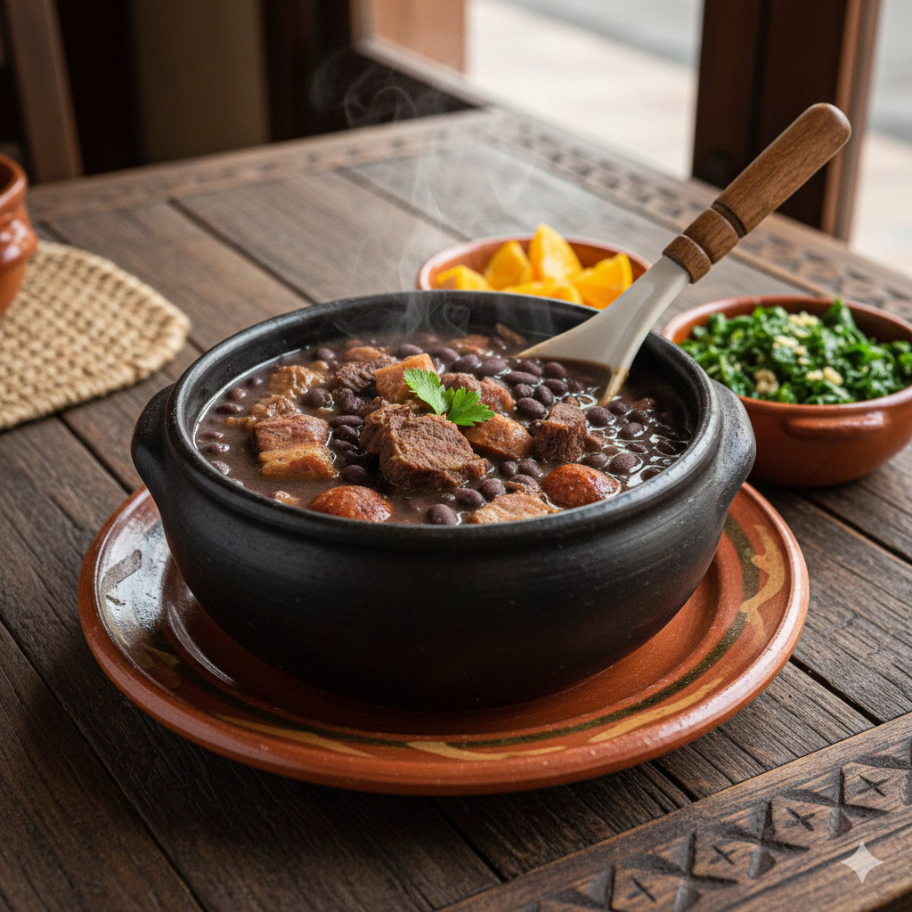

Home
Feijoada (Brazilian Black Bean Stew)
Traditional Brazilian Black Bean & Pork Stew
Feijoada is Brazil’s most iconic dish. It is a rich and hearty stew made with black
beans and a variety of pork cuts, slowly cooked to develop deep flavors.
Traditionally served with white rice, farofa, sautéed collard greens, and orange
slices.
Ingredients
Beans & Meat
- 500 g (1 lb) clack beans
- 300 g pork ribs, chopped
- 300 g pork belly
- 200 g smoked sausage (linguiça or kielbasa)
- 200 g calabresa sausage, sliced
- 150 g dried beef (optional)
- 2 bay leaves
Seasoning
- 1 large onion, finely chopped
- 5 cloves garlic, minced
- 2 tbsp vegetable oil
- Salt and black pepper to haste
Instructions
- Wash the black beans and soak them in water for at least 8 hours (or overnight). Drain and set aside.
- If using dried beef or salted pork, soak them in water for a few hours, changing the water 2-3 times to remove excess salt.
- In a large pot, add the beans, meats, bay leaves, and enough water to fully cover everything. Cook over medium heat for 1.4 to 2 hours, stirring occasionally, until the beans are tender and the broth is thick.
- In a separate pan, heat the oil and sauté the onion until golden. Add the garlic and cook for about 1 1 minute
- Add the onion and garlic mixture to the feijoada pot. Season with salt and black pepper to taste. Let it simmer for another 20-30 minutes to blend the flavors
Serving suggestions
Feijoada is traditionally served with:
- White rice
- Farofa (Toasted cassava flour)
- Sautéed collard greens
- Orange slices (to balance the richness)
From your friend in Brazil, enjoy the feijoada!